Un film IA de 20 secondes
Le monstre et le bébé punk
Un monstre de 4 mètres tombe du ciel. La menace est un bébé. Il porte une crête bleue, un perfecto clouté et une ceinture de biberons-grenades.
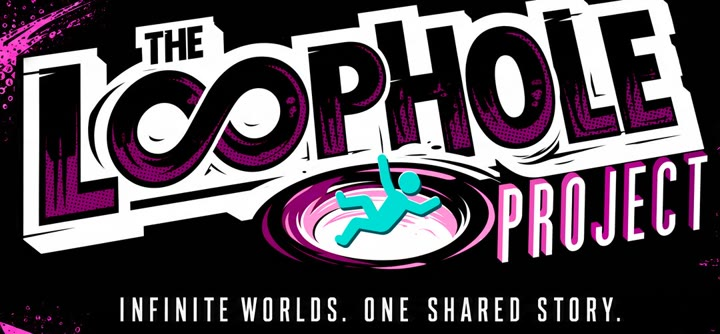
Film participant · The LoopHole ProjectToute ressemblance avec des bébés existants ou ayant existé, ou avec des monstres réels, serait purement fortuite.
Le biberon-grenade, c'est l'accessoire imaginé par Alexandre (votre curseur en est un). Cliquez sur ceux qui tombent. Ou n'importe où : ça éclabousse.
01 le film
Le film déposé
La version déposée pour The Loophole Project : 20,00 secondes pile, 4 clips enchaînés, 15 plans. Celle qui montre le mieux les détails du bébé : sa santiag, sa main sur la grenade, son rire éclairé par l'explosion.
En ce moment : avec le riff punk (musique Lyria mixée à 35 %, sous le son du film).
La musique du film
Le riff punk en entier : 2 min 06 de guitares saturées, composées avec Google Lyria dans Magnific. Dans le film, il passe à 35 %, sous les cris et les explosions.
Ce qu'il faut regarder (cliquez pour y aller)
02 le film collectif
The Loophole Project
Un film collectif fait avec l'IA, sans jury ni classement : chaque film conforme y entre. Chaque créateur fabrique 20 secondes au maximum, en suivant quatre temps imposés, dans l'ordre. Puis tous les films sont montés bout à bout, en boucle : le trou où plonge mon personnage devient la porte du monde du créateur suivant.
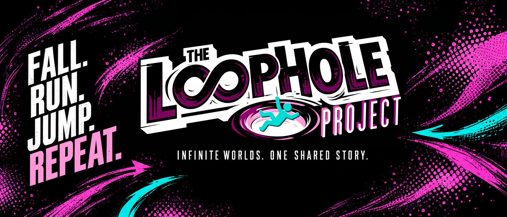
Alexandre a trouvé l'idée absolument géniale : des créateurs du monde entier, chacun son monde, et un seul film sans fin où l'on tombe de l'un dans l'autre. C'est elle qui a donné naissance au monstre et au bébé punk. Découvrir The LoopHole Project
-
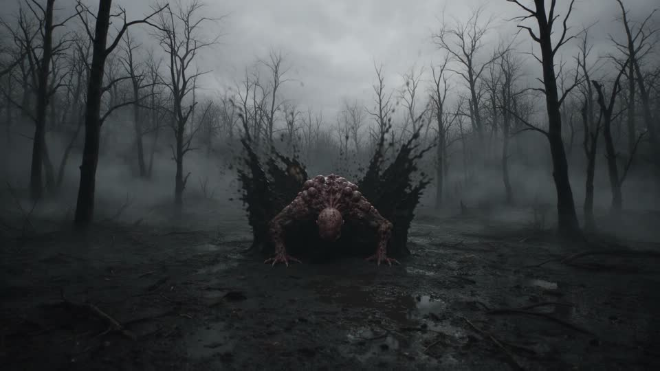
1 · FALL
Tomber
Un personnage tombe du ciel et atterrit dans un monde nouveau. Ici : le monstre, dans une forêt morte, sur la boue noire.
0:00 → 0:05
-
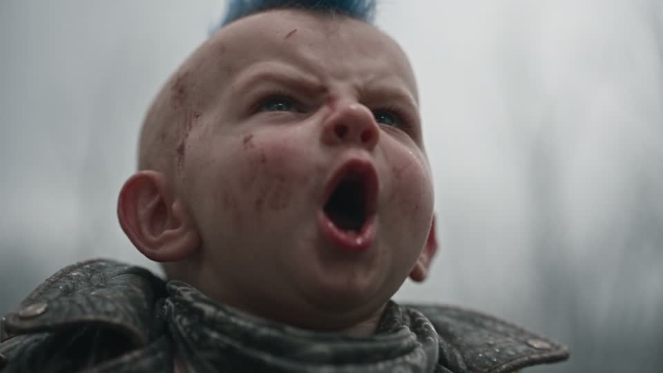
2 · THREAT
La menace
Il découvre un danger. Ici, l'inversion : la menace, c'est un bébé punk minuscule qui lui crie « BOOM! ».
0:05 → 0:09
-
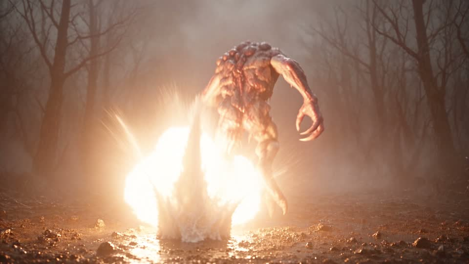
3 · RUN
Fuir
Il fait demi-tour et s'enfuit. Le bébé le poursuit en lançant ses biberons-grenades : feu orange et geysers de lait.
0:09 → 0:15
-
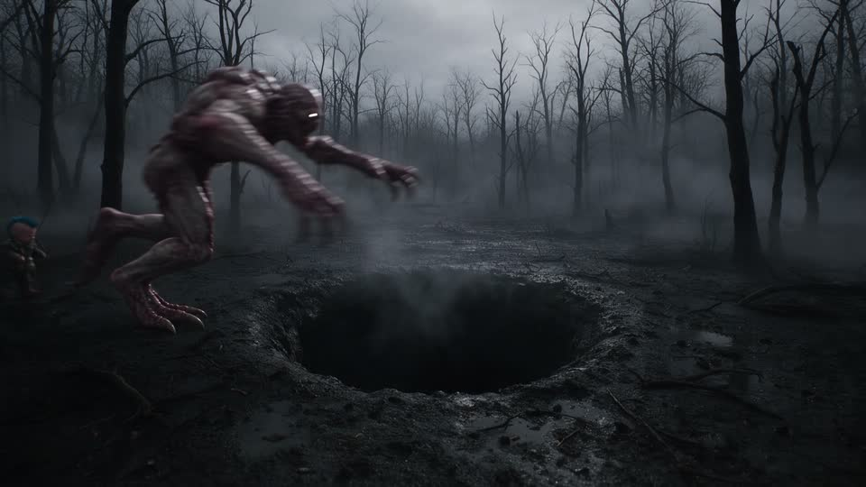
4 · JUMP
Sauter
Il saute dans un trou bien visible et disparaît. Le bébé, lui, freine au bord, et triomphe.
0:15 → 0:20
The LoopHole Project : theloopholeproject.ai · dépôts jusqu'au 21 octobre 2026.
03 les versions
Toutes les versions
Le même bébé, le même monstre, et toutes les façons de le raconter : la version déposée au LoopHole Project, neuf fins au choix, et les essais. Survolez une vignette pour la voir bouger sans le son ; cliquez sur « Regarder » pour la voir avec le son. Toutes ont la musique punk.
Conformes au LoopHole Project · 20,00 s
-
Déposée 20,00 s
V3 · Les détails du bébé
Quatre clips enchaînés, quinze plans : la santiag, la main sur la grenade, le rire. La plus complète.
-
Conforme 20,00 s
V2 · Gros plans, caméra qui bouge
Un seul plan-séquence de six plans : le monstre fuit à l'instant même du « BOOM! », caméra à l'épaule au ras de la boue.
Choisis ta fin
Neuf fins pour le même film, imaginées par Alexandre : quatre chutes surprises et cinq boucles qui renvoient au début. Ici, plus de règle des 20 secondes : chaque version garde la meilleure séquence, sans contrainte (26 à 28 s). Choisissez une fin : on ne voit que ce qui change, du plongeon dans le trou jusqu'à la chute finale (12 s). « Voir le film en entier » montre la version complète.
Quatre chutes surprises
Cinq boucles : la fin qui recommence
Essais · les fins tassées en 20 s
Pour faire tenir une fin surprise dans les 20 secondes, la poursuite a été accélérée deux fois. L'essai est instructif, mais le bébé qui court en accéléré y perd de son charme : les fins longues, plus haut, sont meilleures.
-
20,00 s
La maman monstre
Une mère monstre six fois plus grande surgit du brouillard. Pour la première fois, le bébé a peur.
-
20,00 s
La boucle
Le monstre retombe du ciel, encore. Le bébé, blasé, décroche une autre grenade. À l'infini.
-
20,00 s
La maman punk
Sa mère arrive, même crête bleue. Elle le soulève par le col et le gronde.
-
20,00 s
La réconciliation
Un bébé monstre sort du trou en pleurant. Le bébé punk lui tend un vrai biberon.
Les premières versions
-
20,00 s
V1 · Le plan-séquence
Le tout premier : trois plans d'un seul tenant, caméra fixe, comme la dictée d'origine.
-
20,00 s
V1 · En quatre clips
Un clip par temps imposé, chacun repartant de la dernière image du précédent.
Les chutes · ce qu'on n'a pas gardé
Les prises écartées, montrées telles quelles. Chacune a appris quelque chose au film. (Le tout premier lancement, avec Seedance 2.0, n'a même pas donné de vidéo.)
-
Premier essai 5 s
Le tout premier essai d'Alexandre
Avant tout le reste, Alexandre teste seul, dans Magnific, avec Hailuo et une phrase à lui : « Le monstre géant tombe de façon soudaine depuis le ciel sur le sol. » La chute marche déjà. Mais pas de bébé, pas de son : c'est le point de départ, pas un plan du film.
-
Écartée 6 s
Le bébé court à côté
La poursuite de la première version, caméra fixe. Le bébé court à côté du monstre au lieu de lui courir après, les grenades éclatent près de lui : on ne sait plus qui chasse qui. C'est ce plan qui a fait changer la caméra.
-
Écartée 4 s
« One… loud… BOOM! »
Les gros plans sont superbes, mais le bébé lit à voix haute la consigne du son : il dit « One loud BOOM » au lieu de « BOOM! ». Refait avec la seule réplique écrite noir sur blanc.
-
Écartée 7 s
La maman punk… sans la forêt
La maman punk arrive, gronde son fils, lui confisque ses grenades. Tout y est, sauf le décor : la forêt a disparu, on se croirait dans un studio noir. Refaite en redonnant la photo de la forêt.
Les fichiers d'origine en 1080p existent pour chaque version : demandez-les à 3h33.
04 la fabrique
Comment on l'a fabriqué
Pas de tournage, pas de caméra : l'idée d'Alexandre, ses deux images, sa dictée, puis ses choix de réalisateur à chaque étape. L'IA a servi d'atelier. Voici l'histoire, ratés compris.
-
Le point de départ
1 L'idée : tout inverser
The LoopHole Project impose un personnage qui tombe, découvre une menace, fuit et saute dans un trou. Alexandre retourne la règle : le personnage qui tombe du ciel est un monstre horrible de 4 mètres, et la menace qui le fait fuir est un bébé. Le film est construit pour la boucle du film collectif : il commence par une chute et finit dans un trou.
-
Les personnages
2 Les accessoires du bébé
Le bébé punk, c'est une panoplie, et chaque pièce est une idée d'Alexandre : la crête iroquoise bleu électrique, le perfecto noir clouté, les santiags marron, et surtout la ceinture de biberons-grenades, l'arme la plus mignonne et la plus absurde du film. (Votre curseur en est un.)
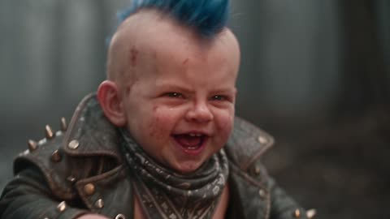
crête bleue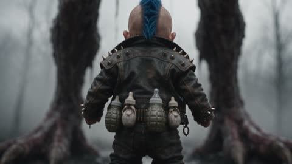
perfecto clouté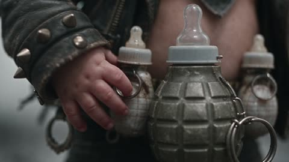
biberons-grenades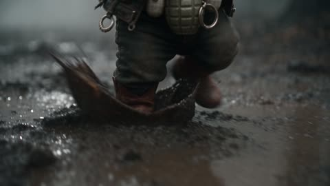
santiags
-
Les images de départ
3 Deux photos pour deux personnages
Avant toute vidéo, Alexandre fabrique ses deux personnages en image fixe. Le monstre naît dans Grok, puis entre dans Magnific. Le bébé arrive sous la forme d'un fichier, « BabyPunk.png », importé lui aussi dans Magnific. Ces deux photos servent de référence à chaque plan : c'est grâce à elles que le bébé garde sa crête et le monstre ses griffes d'un bout à l'autre. Puis il en tire ses planches de personnage : face, profil, dos, gros plans sur le visage, la ceinture, les bottes, les griffes. Les voir plus bas.
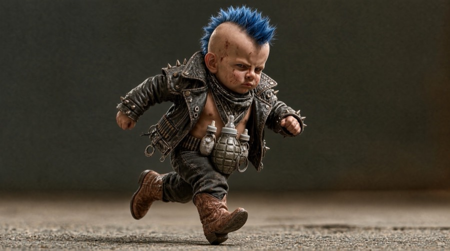
BabyPunk.png 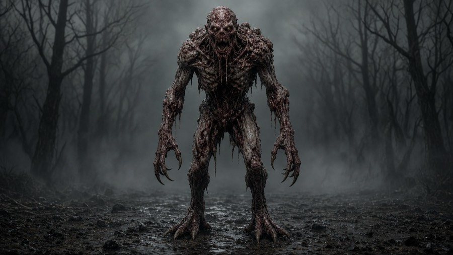
le monstre, fait avec Grok -
Le scénario
4 La dictée du scénario
Alexandre dicte son film d'une traite, plan par plan :
« Un monstre incroyable, horrible, qui tombe du ciel… derrière lui, il y a un bébé très punk. Il est tout petit, mais il fait boum ! »
Cette phrase, c'est le principe de base du film. Tout le reste en découle : chaque plan, chaque version, chaque fin vient la servir.
- L'inversion. Dans un film de monstre, c'est le monstre qui fait peur. Ici, c'est lui qui a peur. La menace, c'est le plus petit personnage de l'écran. The LoopHole Project impose « un personnage découvre un danger » : Alexandre décide que le danger, ce sera un bébé.
- L'écart de taille. Quatre mètres de chair à vif contre un bébé qui lui arrive au genou. Toute la mise en scène joue sur cette différence : la petite santiag entre les pattes griffues, la contre-plongée sur le visage du bébé, la tête du monstre qui se penche, perplexe, vers ce minuscule adversaire.
- Le « boum ». Un seul mot suffit à renverser le rapport de force. C'est le déclencheur de toute la poursuite, et il deviendra une règle de réalisation : le « BOOM! » déclenche la fuite, sans le moindre temps de réaction.
- Le ton. De l'horreur pour le décor et le monstre, du dessin animé pour le bébé : un film de monstre qui tourne à la comédie, avec des grenades qui sont des biberons et des explosions qui finissent en geysers de lait.
De la dictée aux quatre temps du LoopHole Project
Dans sa dictée, Alexandre déroule déjà tout le film, dans l'ordre imposé par The LoopHole Project. Ses mots, et ce qu'ils sont devenus à l'image :
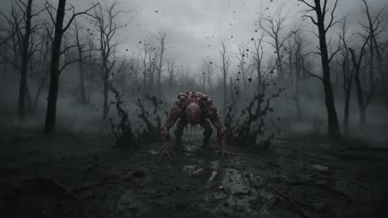
1 · Fall
« Un monstre incroyable, horrible, qui tombe du ciel. La caméra est fixe et on voit le monstre tomber du ciel. »
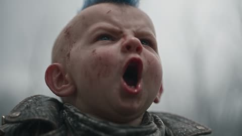
2 · Threat
« D'un seul coup, on se rend compte que derrière le monstre, il y a un bébé très punk. Il est tout petit par rapport au monstre, mais il fait boum ! »
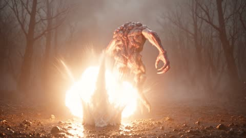
3 · Run
« Le monstre a très peur et se met à courir. Le bébé a autour de la ceinture des biberons grenades ; il jette les grenades sur le monstre, qui explosent les unes après les autres. »
4 · Jump
« Puisqu'il courait, il y a un trou, il tombe dedans. Le bébé est super content, il a réussi son coup. »
Deux autres phrases de la dictée comptent. « J'ai des photos de référence ; tu n'auras pas besoin de me le décrire. » : les personnages sont les siens, et les images de départ font foi. Et « C'est un concours qui va être en boucle. » : la boucle est dans l'idée dès le premier jet. C'est d'elle que naîtront, plus loin, les fins qui renvoient au début du film.
-
L'atelier
5 L'atelier, dans Magnific Spaces
Le film se fabrique sur une seule page de Magnific : des boîtes reliées par des fils, qu'on lance d'un coup.
📷 2 photos 🌲 décor ◯ le trou 🎬 clip 1 → 2 → 3 → 4 ♫ musique 🎚 mixage- Le décor, une forêt morte, puis le trou noir creusé dedans : deux images Seedream 5 Pro.
- Les clips : Seedance 2.5, avec leur propre son. Chaque clip repart de la dernière image du précédent : c'est ce qui rend l'enchaînement fluide.
- La musique : un riff punk de Google Lyria, « Polished Mayhem », glissé sous le son du film à 35 %.
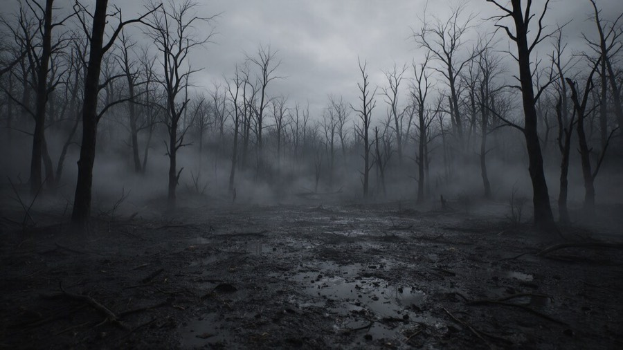
Le décor 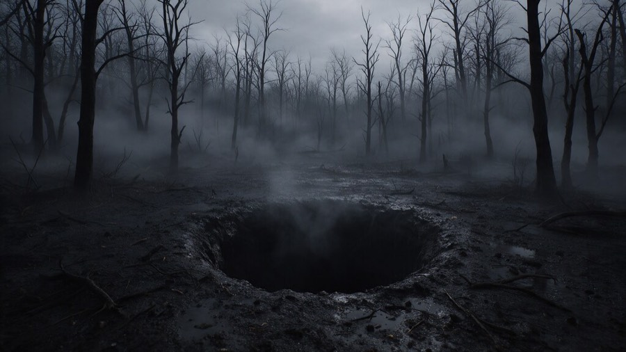
Le trou Ses outils : Magnific Spaces pour l'atelier, et des agents IA (Claude) pour mettre ses indications en consignes techniques et construire la page de Magnific.
Voir le Space Magnific (il faut un compte Magnific, et y avoir accès)
-
Les essais
6 Premier lancement : raté
Le premier clip, confié à Seedance 2.0, échoue, sans un mot d'explication. Comme tout est branché, le reste s'annule en cascade. Relancée avec Seedance 2.5, mêmes consignes, même photo : les quatre clips passent du premier coup.
-
Le montage
7 Le montage au millième
La machine rend toujours un peu trop : 481 images au lieu de 480, soit 20,04 s. Or le règlement dit 20 secondes au maximum. Le film est recoupé à l'image près : 480 images à 24 par seconde, 20,00 s pile.
-
La réalisation
8 Les choix de réalisateur
Alexandre revoit son film et donne ses orientations de réalisateur :
- « Plus de gros plans sur le visage du bébé. »
- Une caméra plus dynamique : travellings rapides, caméra à l'épaule au ras de la boue.
- Le « BOOM! » déclenche la fuite sans attendre : plus aucun temps de réaction du monstre.
- « Les détails ont de l'importance » : son visage, ses objets, ses mouvements, ses fringues, sa course.
Ce sont ses idées d'orientation. Il les a ensuite fait développer en prompts beaucoup plus précis : plan par plan, seconde par seconde, avec le cadrage, le geste, le son, et les détails à garder d'un plan à l'autre. En voici un, tel qu'il a été envoyé à Seedance 2.5.
Lire le prompt du plan « BOOM! » (version 3, clip 2)
Écrit en anglais, la langue que le modèle suit le mieux. Entre crochets : les images branchées en référence.
No music, natural sound only. [dernière image du clip 1] is the previous moment: same place, same colour grade and weather, the baby standing behind the monster's heels. [photo du monstre] is the monster: keep its exact anatomy, skin texture, claws and proportions: emaciated 4 m humanoid, bald, skinless grey-pink flesh, hanging flesh strips, glowing white eyes, needle teeth, long arms, long black claws, digitigrade legs. [photo du bébé punk] is the punk baby: keep his exact face, blue spiky mohawk, scowl, open studded leather jacket, grey bandana, baby-bottle grenade belt, dark jeans, brown cowboy boots. He reaches the monster's knee. Dialogue: the baby says exactly one word, BOOM, shouted once at 00:02. Nobody says anything else in this clip. Four fast shots, hard cuts, the baby's face is the star. Shot 1 (00:00-00:01): extreme close-up of the baby's face, low angle: eyes narrowing, mud on his cheek, blue mohawk spikes against the grey sky, lips pressed shut. Sound: a tiny angry breath. Shot 2 (00:01-00:02): insert close-up: his chubby hand grabs a baby-bottle grenade on his belt, the rubber teat wobbling, the metal ring glinting. Sound: click of the clip. Shot 3 (00:02-00:03): extreme close-up of the baby's face: he opens his mouth once and yells "BOOM!" straight up at the monster, then snaps his mouth shut. Shot 4 (00:03-00:04): whip pan to a wide low-angle shot. The yell and the escape are simultaneous: the monster is already sprinting away frame-right with no pause, screaming, mud exploding under its claws; the baby launches after it. Last frame: the monster running frame-right, the baby two strides behind. Cinematic creature-feature film, dark comedy tone, energetic camera. Lighting and cinematography are masterful and expertly accomplished. 1080p, rich details, sharp clarity, stable picture, realistic physics and motion, consistent character appearance across all shots, no morphing, no extra limbs, no deformed hands, no text, no logo, no watermark.
Ce qui clochait dans la toute première version : caméra fixe, et le bébé courait à côté du monstre au lieu de lui courir après. Les deux avançaient côte à côte, les grenades éclataient près du bébé : on ne savait plus qui chassait qui. D'où la caméra qui suit la poursuite, le monstre devant, le bébé derrière. Voir la prise écartée.
De là naissent la V2, puis la V3 : 4 clips, 15 plans, des inserts sur les bottes, les mains, la ceinture. 120 + 96 + 144 + 120 images : 480, encore pile.
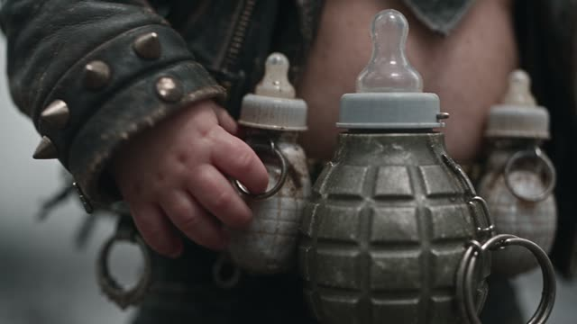
la main 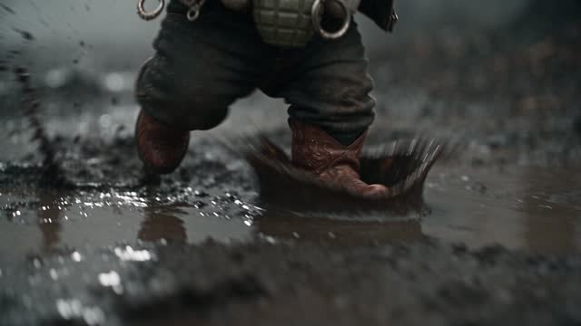
les santiags 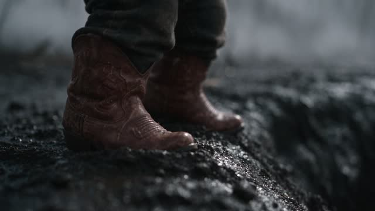
le bord du trou -
Le son
9 « One… loud… BOOM! »
Dans la V3, le bébé ne disait pas « BOOM! » : il disait « One loud BOOM ». La consigne décrivait son cri juste après la réplique, et la machine a tout prononcé. Repéré à l'oreille, confirmé par une transcription mot à mot, corrigé : le bébé dit exactement un mot, BOOM, une seule fois. Il ne dit plus que « Boom! ».
-
Les variantes
10 Les fins et les boucles
Alexandre imagine la suite : que se passe-t-il après le trou ? Quatre chutes surprises (la maman monstre, le retour du monstre, la maman punk, la réconciliation), puis cinq boucles qui ramènent au début du film. Toutes repartent de la dernière image de la V3.
-
Les retouches
11 La maman punk, dans le noir
La première maman punk apparaît dans un studio tout noir : l'image du décor n'avait pas été branchée à sa boîte. Rebranchée, la scène est refaite dans la forêt.
-
Le rythme
12 Le refus de l'accéléré
Pour faire tenir une fin dans les 20 secondes du LoopHole Project, on essaie d'accélérer la poursuite deux fois. Ça tient au chronomètre, mais Alexandre juge que le bébé qui court en accéléré ne fonctionne pas très bien. Sa décision : le LoopHole Project reçoit la V3, et pour tout le reste, chaque version garde sa meilleure séquence, sans contrainte de durée.
05 la pellicule
Les planches-contact
D'abord les planches de personnage d'Alexandre, puis chaque clip, image par image, comme sur une planche de labo. Cliquez sur une planche pour l'agrandir.
Les planches des personnages
Avant de tourner quoi que ce soit, Alexandre fait poser ses deux personnages. Dans Magnific, il demande à plusieurs modèles d'image (Seedream, Nano Banana, Flux) une planche de personnage : « une vue complète de face, de profil et de dos, accompagnée de gros plans détaillés sur son visage, ses accessoires, ses vêtements, leurs matières et leurs motifs ». Puis il resserre : « enlève tous les textes […], fais encore des gros plans sur le visage […] pour réaliser une planche contact de référence en vidéo ». Ce sont ces planches qui gardent le bébé et le monstre identiques d'un plan à l'autre.
Le bébé punk
Le monstre
Les clips, image par image
06 jump
JUMP.
Le monstre a sauté. Dans la boucle du film collectif, ce trou est la porte du film suivant.
07 faire du bruit
Partager le bébé
Le film vous a fait rire ? Faites-le tourner, et faites connaître The LoopHole Project. Chaque version a aussi son propre bouton « Partager », avec sa vignette.
Vous aimez ce travail ? Offrez un café à Alexandre : ça paie les prochains films.
Buy me a coffee